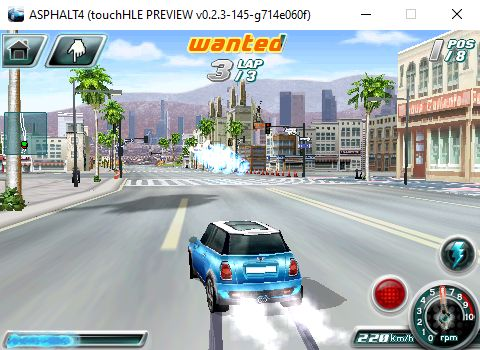
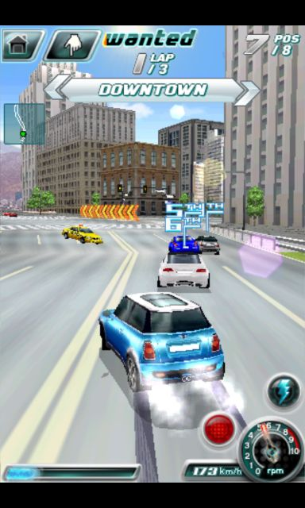
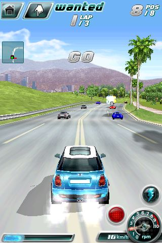
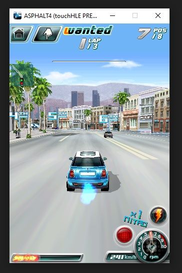
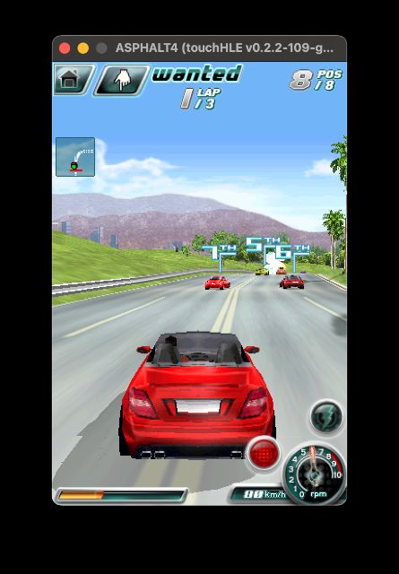

| App name | Asphalt 4: Elite Racing |
|---|---|
| Release year | 2008 |
| Developer/Publisher | Gameloft |
| First reported | |
| First reported by | @Legend0P |
| Version number | Display name | Bundle identifier | Minimum iOS version | Best rating | Last updated | First reported by | |
|---|---|---|---|---|---|---|---|
| 1.2.0 | ASPHALT4 | com.gameloft.ASPHALT4 | (not specified) | ⭐️⭐️⭐️ | @Ninja232323 | ||
| 1.2.7 | ASPHALT4 | com.gameloft.ASPHALT4 | (not specified) | ⭐️⭐️ | @Ninja232323 | ||
| 1.3.8 | ASPHALT4 | com.gameloft.ASPHALT4 | 2.1 | ⭐️⭐️⭐️⭐️ | @Legend0P |
| Version number | touchHLE version | Operating system | GPU | Scale hack supported? | Rating | Reported | Reported by | Remarks | Screenshot |
|---|---|---|---|---|---|---|---|---|---|
| 1.3.8 | v0.2.3-145-g714e060f | Windows 10 | Radeon Vega 7 | Didn't test | ⭐️⭐️⭐️⭐️ | @LucazGabriel | Music works but it doesn't loop (Error reading file data: -39). Whenever the game is paused and unpaused, the music restarts. Sound Effects doesn't work | View | |
| 1.3.8 | v0.2.2-868-g9141d98 | Android 15 | Adreno 740 | Yes | ⭐️⭐️⭐️⭐️ | @MrJthePudding | Sound effects are not playing properly. Can't play multiplayer. | ||
| 1.3.8 | v0.2.2-854-g22ad48d PREVIEW | Android | Adreno 610 | Didn't test | ⭐️⭐️⭐️⭐️ | @biiiriiibiri9 | It works perfect and, yeah, Multiplayer doesn't work, doesn't work because of the servers of the game are down! But if u put the game to background and open it again, it crashes with "assertion failed: orig_class != nil" but the game should load and open. | View | |
| 1.3.8 | v0.2.2-702-g1e44583 | Windows 10 | Intel(R) HD Graphics 5500 | Yes | ⭐️⭐️⭐️⭐️ | @NothingPerson1234567890 | Sounds are playing properly. Multiplayer still doesn't work. | View | |
| 1.3.8 | v0.2.2-576-gae2515f | Windows 10 | NVIDIA GeForce GTX 1660 | Yes | ⭐️⭐️⭐️ | @bionicsurfer | Game is playble. Audio is not working. Multiplayer is not supported as well. | View | |
| 1.2.7 | v0.2.2-331-g7bccc7c | Windows 10 | Didn't test | ⭐️⭐️ | @Ninja232323 | Opens, but after the Gameloft logo, it crashes. | |||
| 1.3.8 | v0.2.2-177-gec7ba5e | Ubuntu 22.04 | Intel UHD Graphics 620 | Didn't test | ⭐️ | @nighto | Crashes with: thread 'main' panicked at src/frameworks/foundation/ns_run_loop.rs:75:5: assertion failed: env.current_thread == 0 | ||
| 1.2.0 | v0.2.2-109-g69dbac33 | macOS Sonoma 14.5 | Apple M1 GPU | Yes | ⭐️⭐️⭐️ | @ciciplusplus | Game is playble. Audio is not working, enabling it is crashing the game. Multiplayer is not supported as well. | View | |
| 1.2.0 | v0.2.1 | Windows 10 | Intel(R) HD Graphics 4600 | Couldn't test | ⭐️ | @Ninja232323 | Crashes at launch | ||
| 1.2.7 | v0.2.1 | Windows 10 | Intel(R) HD Graphics 4600 | Couldn't test | ⭐️ | @Ninja232323 | Crashes at launch | ||
| 1.3.8 | v0.2.1-72-g796e2f8 | Windows 10 | Intel Graphics 520 | Didn't test | ⭐️ | @GamingDucking | Crashes at "Object 0x38001160 (class "_touchHLE_NSString_Static", 0x3000b270) does not respond to selector "cString" | ||
| 1.3.8 | v0.2.1 | Android 13 | Adreno 660 | Didn't test | ⭐️ | @Legend0P |
| Rating | Description |
|---|---|
| ⭐️ | Completely broken: app crashes immediately without any user interaction. |
| ⭐️⭐️ | Only (part of) the main menu, intro or similar is working. |
| ⭐️⭐️⭐️ | Some of the main content of the app works, but with major issues. |
| ⭐️⭐️⭐️⭐️ | The main content of the app works (e.g. entire game is playable) with only small issues. |
| ⭐️⭐️⭐️⭐️⭐️ | Everything works. The app is fully usable. |




